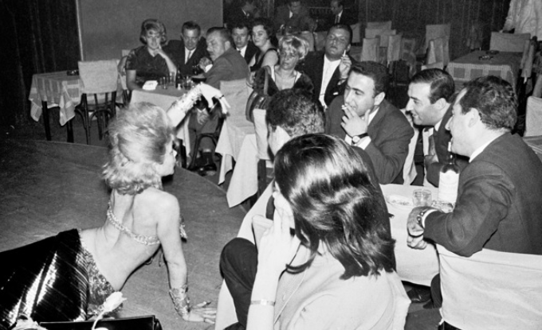

4 Prošeta' devet, majko, godini
J'ai passé neuf ans, ma mère,
(Petnaesta Rukovet - 15ème guirlande :04:27 - 05:51)

|
|
 Version Mokranjac
Version Mokranjac
 Bilja Krstić (rodj. 1955) peva
Bilja Krstić (rodj. 1955) peva
NOTE
| Нисам нашао другу верзију ове песме, осим овoг „модног“ тумачењa Биље Крстић, Српкиње из Ниша. | Je n'ai pas trouvé d'autre version de ce chant, que cette interprétation "à la mode" de Bilja Krstić, une Serbe de Niš . |